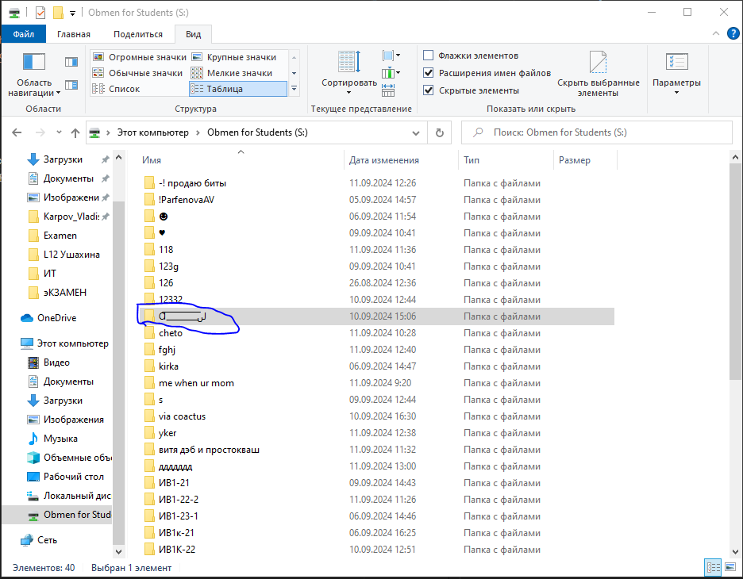
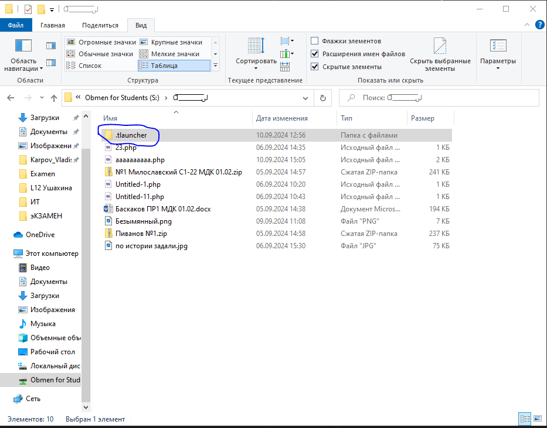
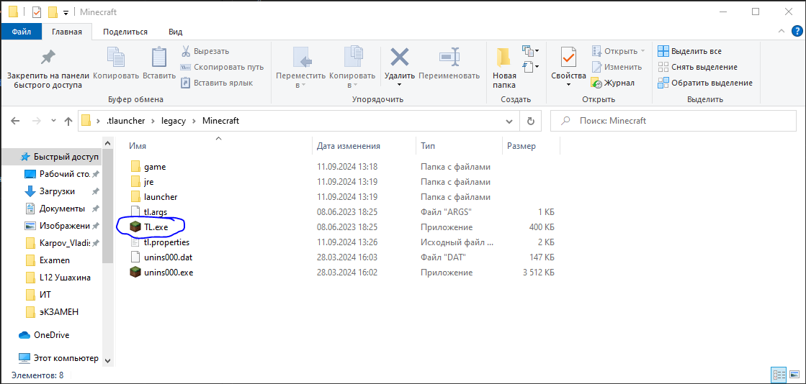
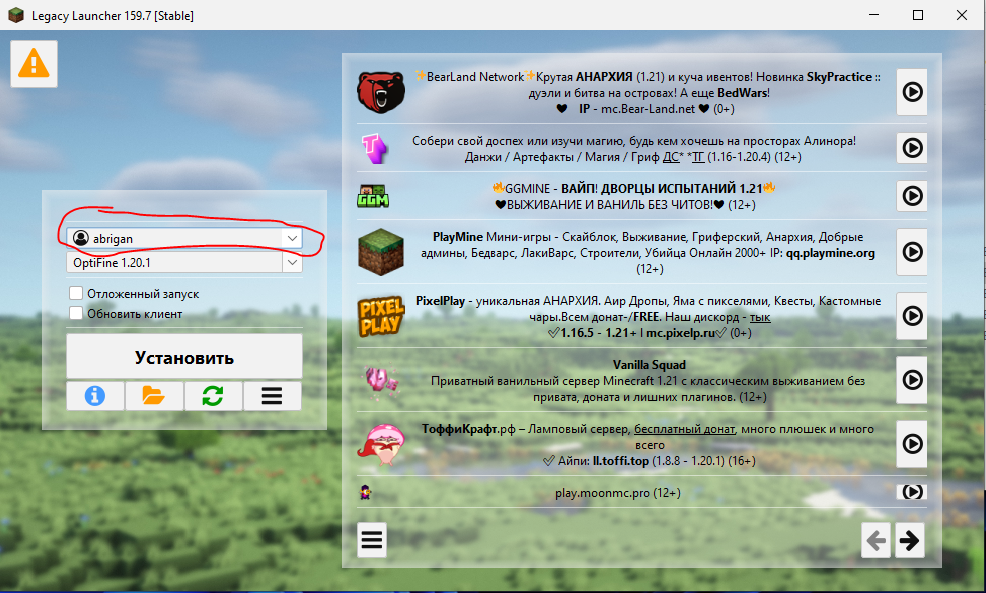
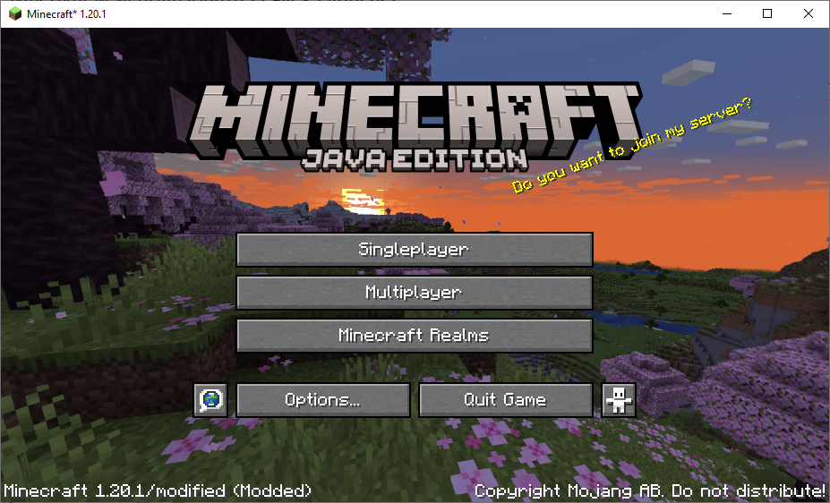

Как запустить Майнкрафт на любом пк в колледже
Если вам скучно на уроках, а браузерные игры уже надоели, то этот сайт для вас
Мы будем использовать Legacy Launcher
Открываем Obmen for Students и ищем там папку с необычным названием
Открываем эту папку и сбрасываем папку .tlauncher на рабочий стол, это папка с нашим лаунчером
Открывем папку с лаунчером и ищем там TL.exe
Запускаем наш лаунчер и в этом окошке создаём аккаунт без пароля (если его нет)
Далее, выбираем версию ниже и запускаем игру
Наконец, вместо скучных уроков информатики, мы можем заниматься по-настоящему важными делами
